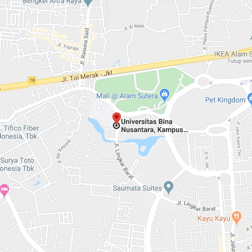

Fancy Art
Fancy Art
About Us
Who are we?
We were founded in 2001 by Adhella, Richard and Welly out of their love for arts and their passion to support local artits with enormous potential.
Our first store was located in Tangerang, Indonesia. It was a small house rented to keep artworks and to held auctions. The first auction held in August 10th 2001 was only attended by 11 people.
But now, that little house already spreads all over the world resulting in total of 12 stores and counting worldwide.
Where to find us?
We're open from 9am to 5pm, Monday-Friday

Our main store is located in Tangerang Selatan, Indonesia.
Main Store
Kav 21, Alam Sutera Jalan Jalur Sutera Barat Panunggangan Timur, RT.001/RW.004, Panunggangan, Kec. Pinang, Kota Tangerang, Banten 15143, Indonesia
Asia
Jl. Kyai H. Syahdan No.9, RT.6/RW.12, Palmerah, Kec. Palmerah, Kota Jakarta Barat, Daerah Khusus Ibukota Jakarta 11480, Indonesia
Jl. Setraria No.1, Sukarasa, Kec. Sukasari, Kota Bandung, Jawa Barat 40164, Indonesia
Jalan Raya Kuta, Kuta, Kabupaten Badung, Bali 80361, Indonesia
Jl. Kol. Sugiono No.31, A U R, Kec. Medan Maimun, Kota Medan, Sumatera Utara 20212, Indonesia
61142 Samara Plains, Kalimantan Utara, Tang Badui, Indonesia
7850 Anderson View, Mongolia Dalam, Ji'ergalangtu, China
Europe
51 Boulevard Voltaire, 75011 Paris, France
111 39 Stockholm, Swedia
North America
1531 Fulton St, Brooklyn, NY 11216, Amerika Serikat
221 4th St, San Francisco, CA 94103, Amerika Serikat
South America
Malampata Ccochirihuaylla, Cusco 08001, Peru